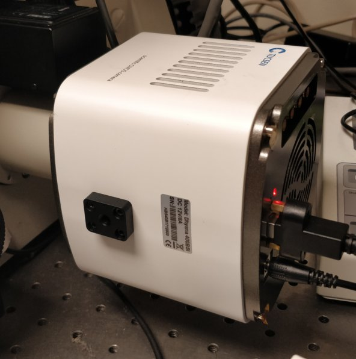
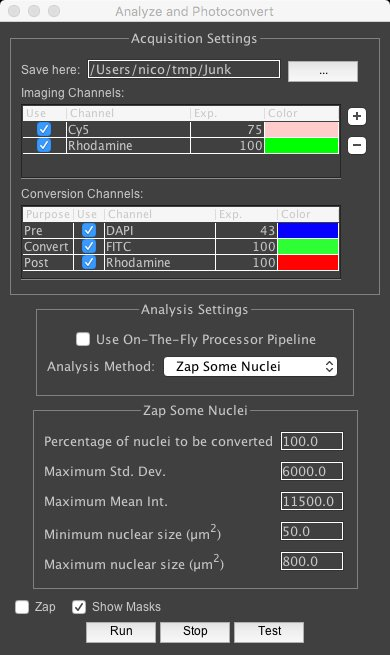
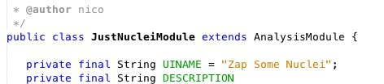
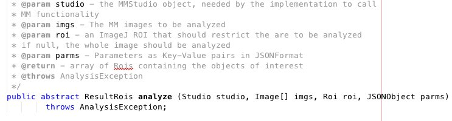
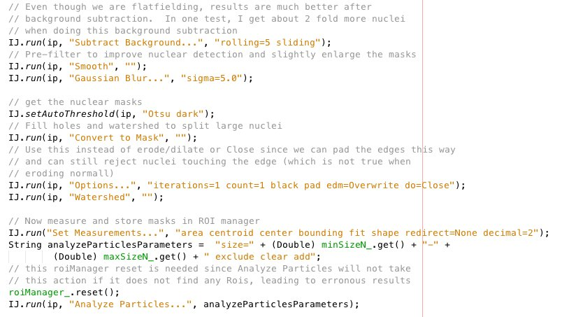
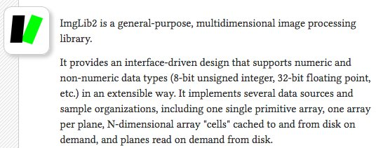

Tool development
- sCMOS camera characterization
- CRISPR screening plugin
- Image processing approaches
Nico Stuurman, 2018-05-18
Camera characterization
Camera characterization
- sCMOS versus CCD
- ReadNoise and fixed pattern noise
- Electron Conversion Factor
Measure electron conversion factor from Photon shot noise
DN = k * N (1)
N - number of photons
k - electron conversion factor (ecf)
DN - digital number
√N - photon shot noise
k - electron conversion factor (ecf)
DN - digital number
√N - photon shot noise
If only noise is shot noise, then:
σ(DN) = √(DN)
and:
σ(DN) = k * √(N) (2)
so: $$k = {\sigma{DN}}^2 / DN$$
CRISPR Screening Plugin coding



Old fashioned ImageJ analysis: 
Alternatives:

Other programming environments: Scikit-image(Python), OpenCV, has bindings to Java and Python, ITK (from NLM, segementation and registration), DIPLib (C/C++ library available from Matlab), Vigra (C++, good Python bindings.